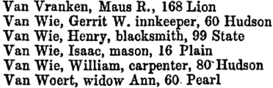

Van Wie
The story of the Van Wie family of early Albany begins with the arrival of New Netherland pioneer called Hendrick Gerritse during the mid-seventeenth century. His farm along the river south of Albany in Rensselaerswyck became the focal point for family activities that before 1800 included a number of residents of the city of Albany.
In 1697, only the Rensselaerswyck household of sole surviving son "Gerrit Van Wey" was configured on the countywide census of households.
By the end of the seventeenth century, this family (at least with Albany) had adopted the surname "Van Wie" perhaps in an effort to distinguish them from the regional (and more amorphous) "Gerritse" family. Thus, we strive to not confuse them in the assignment of qualitative information.
In 1720, no Van Wies were listed among the freeholders in the city of Albany. At that time, Hendrick Wan Wye [Jr.] and the names of Gerrit and Jan Van Wie were included among the freeholders of Rensselaerswyck. In 1742, the three Van Wies were listed among the freeholders living in Rensselaerswyck.
By the mid-eighteenth century, the family would be in its third and fourth generations in America and was well established in greater Albany County. Although most descendants named "Van Wie" would cluster around the "Van Wie's Point" homestead, family members also were interwoven into the city's social fabric.
A published compilation of survey lists from Albany County covering the mid-1760s provided the names of almost two dozen different Van Wies - all of them connected to activities and/or holdings in the Manor. However, at virtually the same time (early in 1766), the consecutive signatures of brothers Pieter Van Wie, Willem Van Wie, and Casparus Van Wie were included among the 94 signers of a Constitution for the Albany Sons of Liberty. Virtually every name on that earliest counting of Albany dissidents identified a city resident.
In 1767, a map fixed the location of the residents of Rensselaerswyck living around Albany. Three Van Wie households were clustered along the river south of the city.
In 1790, two "Van Wee" named households
were configured on the city census
and ten more in surrounding Watervliet.
a decade later, two Van Wie households
remained in the city.
 The first city directory published in 1813, identified four Van Wie households living in Albany's first ward. Two homes, including a roominghouse kept by Gerrit W. Van Wie, were located on Hudson Street. In 1820, six Van Wie addresses were listed in various settled locations in the city.
In March 1869, a newspaper obituary marked the passing of 93-year-old Catherine Van Wie Quackenbush - last of the Van Wie's Point family.
Located off of Western Avenue in Westmere, the suburban street named Van Wie Terrace also commemorates the family today. Online: linked and illustrated family-based website; also useful and online; 2015; Revolutionary War pension application for John Van Wie of Bethlehem.
Van Wie's Point: With family settlement dating to the first half of the eighteenth century, Van Wie's Point (use this spelling for online searches) is a well-known modern reference place. It's history has been loosely chronicled and would benefit from a focused study. Among the likely online resources are: former historian Allison P. Bennet; Miner; Glenmont Wikipedia; compilation;
Follow this link to more information on the Van Wies on this website.

 Sources: This access page on the Albany Van Wie family is derived chiefly from family and community-based resources. Chief among the printed resources are: Van Wie section of HMGFM;
Sources: This access page on the Albany Van Wie family is derived chiefly from family and community-based resources. Chief among the printed resources are: Van Wie section of HMGFM;
Van Wies in the biographical index.!